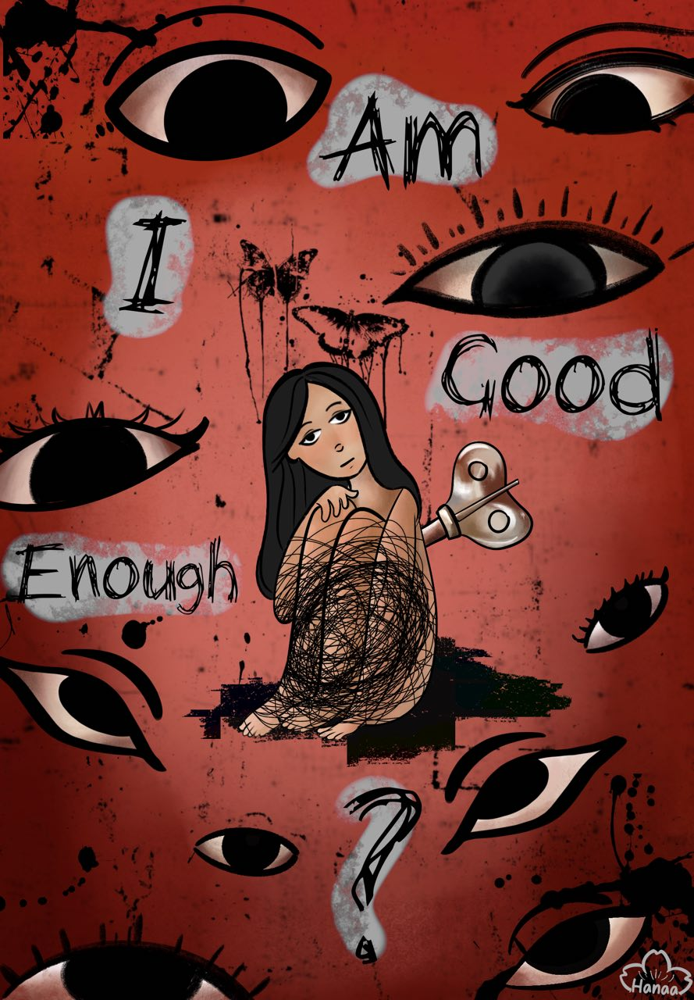
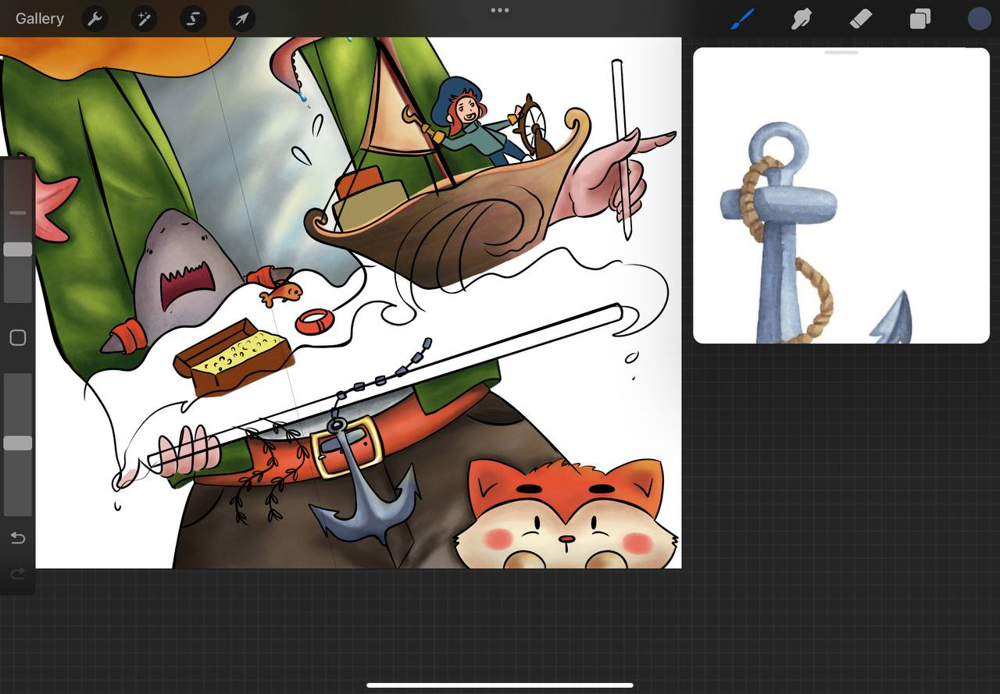
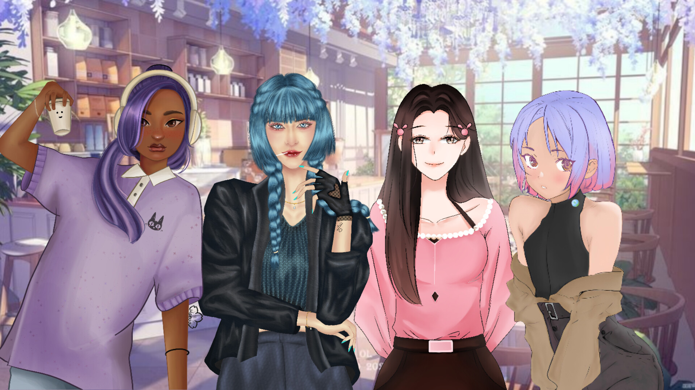
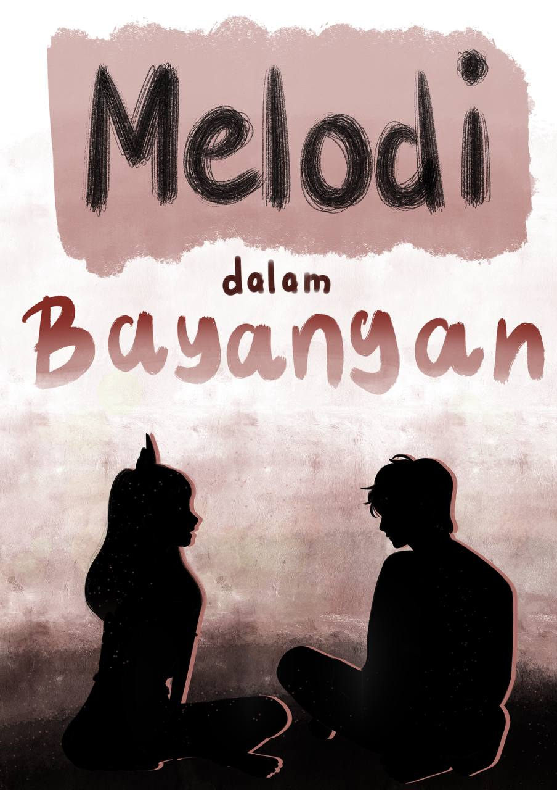

Siapa sih aku ituu?
Hai! Aku kerap kali dipanggil Hana, Han, atau Na. Aku suka memanfaatkan kedua kaki ku untuk menjelajahi banyak tempat baru. Aku suka sekali menggambar dan jalan-jalan. Jika ditanya mau jadi apa 5 tahun lagi? Dengan lantang ku jawab, seorang ilustrator muda yang berkelana menyusuri setiap daerah di Indonesia, menorehkan kisah menarik menjadi gambar dengan beragam kisah dibaliknya.
Aku juga suka menulis, jika kalian beruntung, tulisanku akan muncul sekali-kali di beranda pencarian, memberikan cerita menarik yang mungkin membuat kalian tertawa kecil. Jadi terus ikuti jejak karyaku, dan nikmati setiap pesan rahasia yang meggelitik hati di dalamnya.

Hard Skils:Sebagai ilustrator, aku memiliki kemampuan menggambar digital agar bisa menghasilkan karakter yang ekspresif dan imajinatif. Menggunakan Procreate sebagai alat digital membantu mempercepat proses pewarnaan dan eksplorasi gaya visual. Selain itu, storytelling visual sangat dibutuhkan untuk menyampaikan cerita dengan cara yang menarik dan mudah dipahami.
Soft Skills: Sebagai ilustrator, soft skill seperti rasa ingin tahu dan suka berpetualang membantu dalam menciptakan dunia cerita yang kaya dan imajinatif. Kebiasaan menulis dan suka jalan-jalan juga melatih kepekaan ku dalam mengamati detail serta memahami berbagai karakter dan latar cerita.
Hasil Tangan

Zeref dan Mavis
Gambar Fan art dari salah satu anime favorit ku, fairy tail

Aku 10 Tahun lagi
Saat itu, mengikuti lomba gambar online dengan tema Indonesia. Aku memilih membuat gambaran ku di masa depan yang siap backpacker-an. Sebenarnya itu di tangan kiri megang ipad gituu.

Am I Good Enough
Karya untuk pameran 'CIS' di kampus, tentang seseorang yang merasa kebingungan dengan dirinya sendiri dan selalu merasa insecure.

Little Prince
Ini belum selesai yaa, tapi mau nunjukin proses pengerjaan ilustrasi ku. Mulai dari menggambar tiap bagian hanya berbentuk outline, kemudian lanjut untuk mewarnai dan memberi tekstur di tiap bagian.

Wings
Lagi-lagi gambar untuk pameran. Tentang gambaran kuda sembrani yang sudah tidak diingat lagi oleh masyarakat saat ini.
Colabb
Menggambar bersama ke empat temanku. Kita nentuin tema gitu dan buat original chara masing-masing.
Misteri Di Malam Natal
Mengerjakan tugas Metode Reprografika, membuat buku ilustrasi Singkat. Tentang anak yang mencari tau dari mana asalnya kado-kado di saat malam natal.
Kalau mau baca ceritanya bisa klik link ini ya misteri.malam.natal
Melodi Dalam Bayangan
Membuat cerita wayang jeadi moderen. Aku mengangkat kisah dewi gendari dengan beberapa modifikasi pada atribut tokoh wayang dan ceritanya.
Kalau mau baca ceritanya bisa klik link ini ya melodi.dalam.bayangan

Counting Down Collage Life
Aku mengerjakan projek animasi 2d, dengan menggabar tiap adegan frame by frame. Walaupun hanya sekedar gerakan kecil seperti menggedipkan mata atau menggerakan tangan. Pengerjaannya sekitar 1 bulan, dengan banyak waktu bersantai. Hehehe...
Kalau mau liat videonya bisa klik link ini ya counting.down.cl
Jejak Langkah
Kalau Senggang, bisa datang berkunjung sebentar

Ayo Ke Sini! linkedin.hana behance.hana youtube.hana
Semisal ada pesan atau hanya sekedar ingin berbincang, bole banget langsung kirim pesann!!